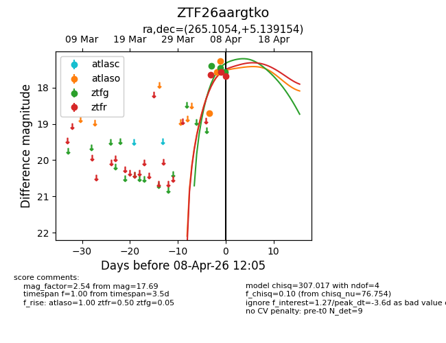
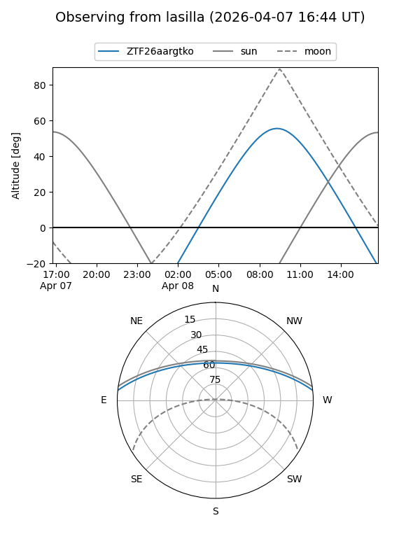
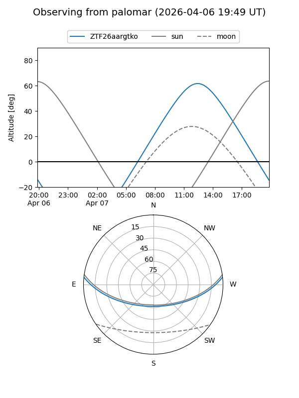
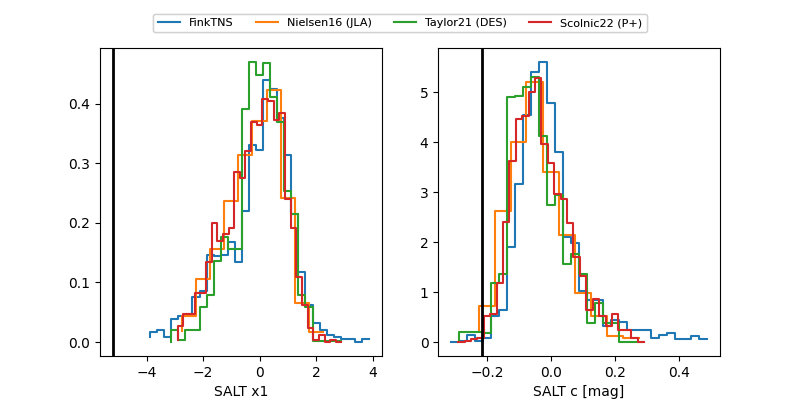

ZTF26aargtko
Target ZTF26aargtko at 2026-04-08 12:10
Aliases and brokers:
FINK: link
Lasair: link
ALeRCE: link
alt names
ZTF26aargtko (ztf,fink_ztf)
Coordinates:
equatorial (ra, dec) = 265.1054,+5.13915
equatorial (HMS+DMS) = 17:40:25.29,+05:08:20.95
galactic (l, b) = (29.3868,+18.12796)
Flags:
Photometry:
last atlaso=17.28, ztfg=17.57, ztfr=17.69
3 atlaso, 3 ztfg, 3 ztfr detections
Lightcurve

Visibility


Additional plots
